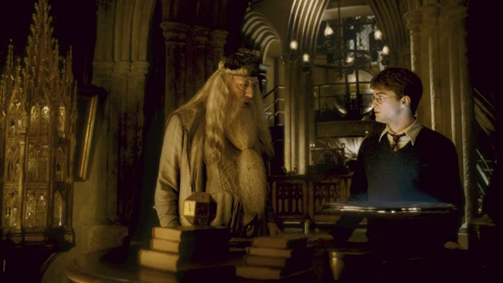

| Data De Lançamento | Diretor | Duração |
|---|---|---|
| 15 de julho de 2009 (Brasil) | David Yates | 2h 33m |
A história acompanha Harry Potter em seu sexto ano na Escola de Magia e Bruxaria de Hogwarts. Com o retorno de Lord Voldemort cada vez mais evidente, o mundo bruxo começa a enfrentar uma nova onda de ataques e perigos. Enquanto isso, Harry recebe de Dumbledore a missão de descobrir informações sobre o passado de Voldemort que podem ser fundamentais para derrotá-lo. Enquanto isso, Draco Malfoy recebe uma missão perigosa e passa a agir de maneira cada vez mais misteriosa dentro de Hogwarts. O filme mistura fantasia, aventura, mistério e romance, mostrando Harry descobrindo segredos importantes sobre Voldemort e se preparando para o confronto final que se aproxima.
| Personagem | Ator/Atriz | Idade Atual |
|---|---|---|
| Harry Potter | Daniel Radicliffe | 37 anos |
| Rony Weasley | Rupert Grint | 38 anos |
| Hermione Granger | Emma Watson | 36 anos |
| Draco Malfoy | Tom Felton | 38 anos |
| Severus Snape | Alan Rickman | *69 anos |
| Albus Dambledore | Michael Gambon | *82 anos |
| Horace Slughorn | Jim Broadbent | 77 anos |
| Tom Riddle | Hero Fiennes Tiffin | 29 anos |
| Lavander Brown | Jessie Cave | 39 anos |
Visualmente, esse filme é belíssimo. A fotografia mais escura, a trilha sonora, os momentos de humor adolescente e a sensação de que uma tragédia está se aproximando fazem dele uma experiência muito marcante.
Gosto muito da ideia de acompanhar Harry e seus amigos em uma fase em que precisam lidar com sentimentos, inseguranças e relacionamentos ao mesmo tempo que o mundo bruxo se torna cada vez mais perigoso. O filme tem momentos divertidos, cenas melancólicas e um final devastador. A atuação de Tom Felton como Draco merece destaque especial. Seu personagem está sob uma pressão terrível, dividido entre o medo, as expectativas da família e uma missão que parece impossível. A atuação transmite esse sofrimento mesmo quando o roteiro não desenvolve tudo o que deveria. E a morte de Dumbledore continua sendo um dos momentos mais dolorosos da franquia. Agora, vamos falar do que me incomoda MUITO: esse filme desperdiça uma das histórias mais importantes de toda a saga. O livro é fundamental para compreender Voldemort. As memórias que Dumbledore apresenta a Harry revelam como Tom Riddle se tornou o bruxo que conhecemos, exploram sua relação com a família, sua obsessão pela imortalidade e o processo de criação das Horcruxes. No filme, muitas dessas memórias foram cortadas ou simplificadas, enfraquecendo a construção do vilão. A relação entre Harry e Gina também foi muito prejudicada. Nos livros, o romance cresce naturalmente, e Gina é uma personagem confiante, divertida, talentosa e com uma personalidade própria. No filme, o relacionamento parece apressado e não recebe o desenvolvimento necessário para que o público compreenda por que Harry se apaixona por ela. E ainda temos a cena do ataque à Toca, que foi criada para o filme e ocupa um espaço que poderia ter sido usado para desenvolver elementos mais importantes do livro. A batalha de Hogwarts após a morte de Dumbledore também foi retirada, assim como o funeral, que teria um significado emocional enorme.
Minha conclusão: é um filme com atuações excelentes, fotografia linda e momentos muito emocionantes, mas que falha justamente onde deveria ser mais cuidadoso. Como adaptação literária, é o que mais me frustra, porque o material original tinha potencial para produzir um dos melhores filmes da franquia.